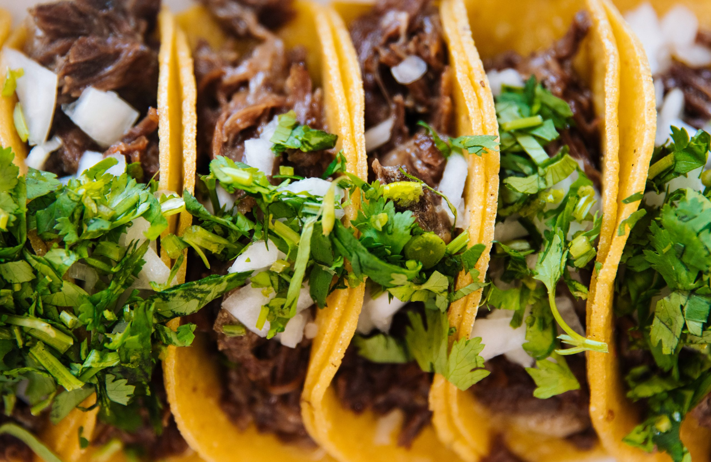

Tacos De Bistec

Description
Tacos de bistec, are one of the most popular and iconic taco preparation. The recipe’s name comes from a derivation form for the words “Beef Steak” which combined, sounds almost like bistec or bistek
The authentic recipe features thin slices of beef, cooked to perfection in a pan and cut into small bites. Toppings like fresh onions, cilantro, radishes, cucumbers, and chiles toreados are the most commons.
Ingredients
- Beef(Thinly Sliced Steak)
- Tortillas
- Onions and Cilantro
- Chiles toreados
- Salsa
- Limes
- Cut the meat and season it with garlic, salt, and pepper.
- In a cast-iron skillet, heat the oil over medium-high heat and add the chopped steak.
- Cook for 4-5 minutes or until the meat starts to release its juices.
- Set the meat aside and cover it eith aluminum foil.
- Now, you can heat prep your tortillas on the skillet over medium heat until they're soft and pliable.
- Place the heated tortillas on a plate and drop some meat on top.
- Add your favorite toppings like salsa, onions and cilantro.
- Enjoy!